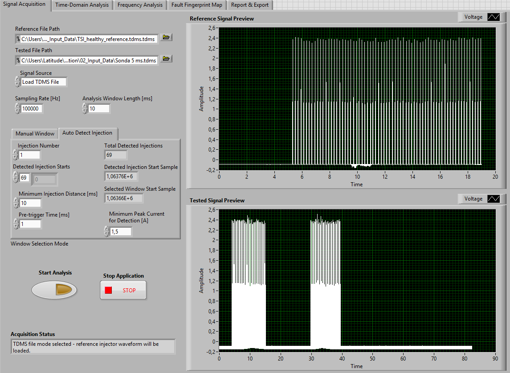
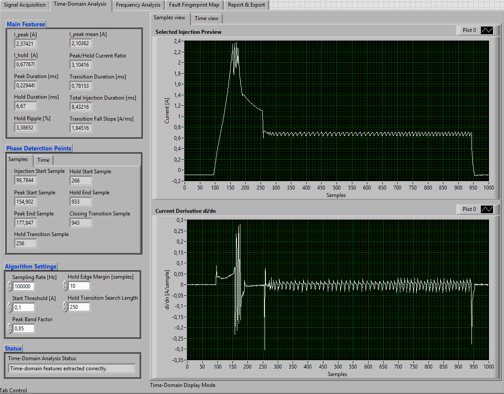
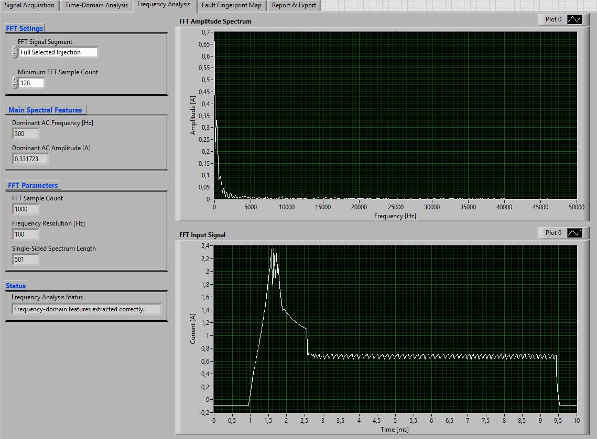
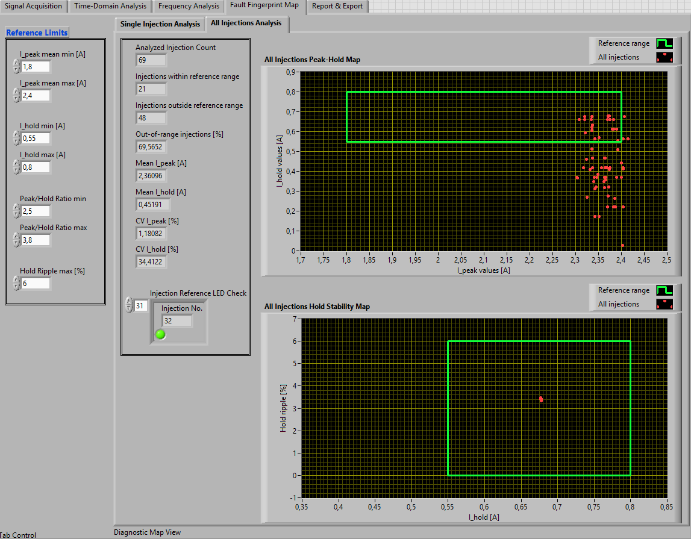
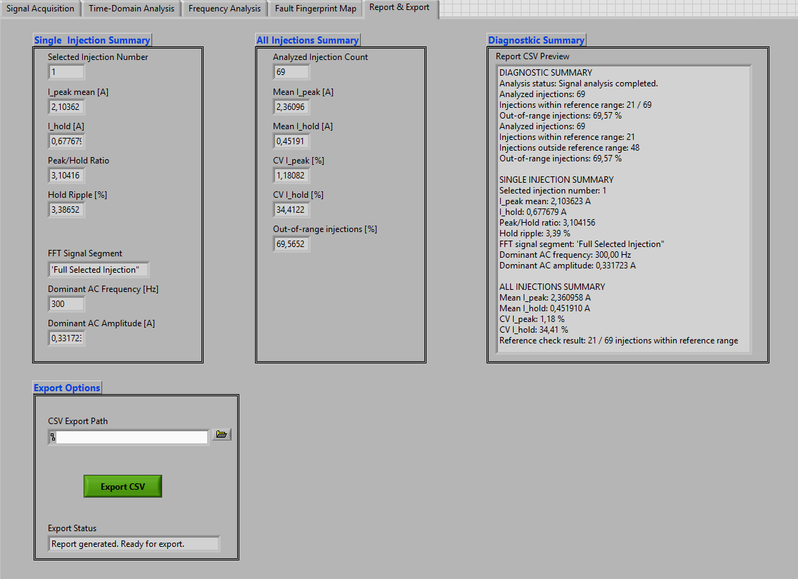

IPEAK
Peak Current
Characterizes the high-current stage responsible for rapid injector actuation.
The application was created to support systematic analysis of current waveforms recorded during electromagnetic injector operation. Raw measurement data are first divided into individual injection events and then processed to identify characteristic operating phases. The extracted time-domain and frequency-domain features can subsequently be compared with reference limits and represented on diagnostic maps. The software therefore combines signal processing, feature extraction and result interpretation within one research environment.
Reference and tested signals can be loaded directly into the application. The acquisition module prepares the measurement data for analysis and identifies individual injection events within longer current recordings.


Each selected injection is analysed together with its current derivative. Characteristic transition points are detected automatically, allowing the software to separate the Peak, transition, Hold and closing regions and to calculate diagnostic parameters associated with the waveform shape.
Characterizes the high-current stage responsible for rapid injector actuation.
Describes the lower current level used to maintain the injector in the open state.
Quantifies current oscillation during the controlled Hold operating phase.
Supports detection of rapid transitions between characteristic waveform regions.
The frequency-analysis module transforms selected signal regions into the frequency domain. This enables identification of dominant AC components and supports evaluation of current ripple that may be difficult to describe using time-domain parameters alone.
Frequency analysis can be performed on selected portions of the injector signal, including the complete injection or a specific operating phase. The amplitude spectrum is used to determine the dominant AC frequency and corresponding current amplitude.

Diagnostic maps combine selected waveform features with predefined reference ranges. The current injection can therefore be represented as a point within a two-dimensional feature space and compared directly with the region associated with expected injector behaviour. This approach provides a visual link between numerical signal features and injector condition assessment.

The final module combines information extracted from the selected injection with statistical results calculated for the complete measurement series. Diagnostic information can be reviewed directly in the application and selected results can be exported for further analysis.
